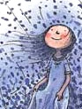

|
| 首页 | 心情日记 | Free | 一起走到 | 从明天起 | 纸飞机 | 下一站 |
|
 他们彼此深信，是瞬间迸发的热情让他们相遇。这样的确定是美丽的，但变幻无常更为美丽.
董事长的一切都让人既羡慕又忌妒，但更让人受不了的是，有一天，上苍忽然赐给他一个神奇的礼物……… |
介绍我努力的抓紧世界，最后却仍被世界淘汰，如果一开始就松手，我会不那么伤心吗？你说，亲爱的孩子，世事难料，随它去吧！ 照相本子关于童年，你记住了什么？两岁时，我拥有一只巨大的粉红猪，它总在我嚎啕大哭时逗我笑。 三岁时，我骑着小木马一路摇到外 婆家，它不喝水也不吃草。四岁时，我离家出走，在公车上睡着了，最后是太空超人送我回家。我真的没骗你，我通通都记得， 还有照片为证。 地下铁天使在地下铁的入口，和我说再见的那一年，我渐渐看不见了。十五岁生日的那年秋天早晨，窗外下着毛毛雨，我喂好我的猫。 六点零五分，我走进地下铁。 向左走向右走They're both convincedthat a sudden passion joined them.Such certainth is beautiful,but uncertainty is more beautiful still |